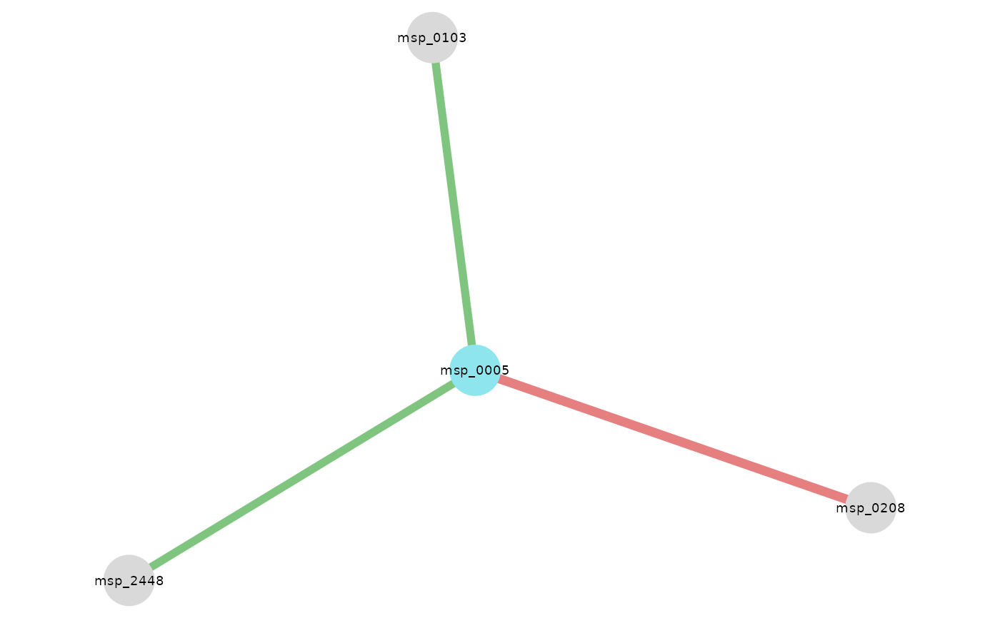
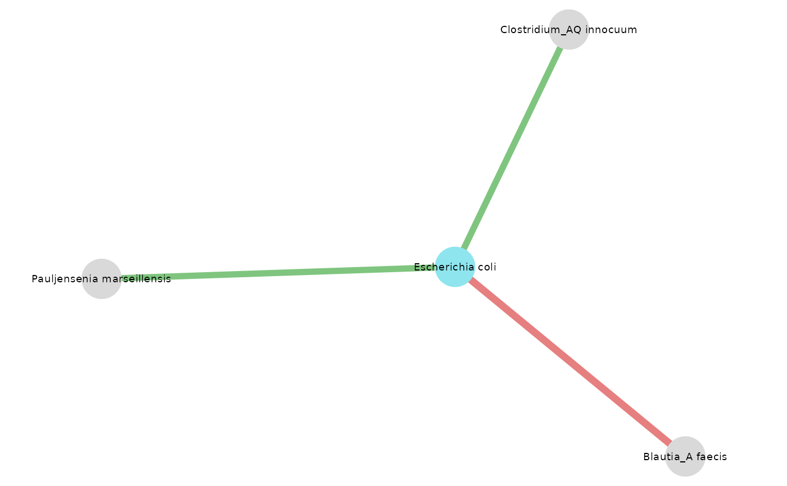
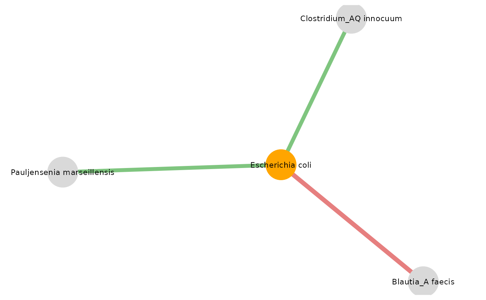

Display network after applying NeighborFinder
visualize_network.RdDisplay network after applying NeighborFinder
Usage
visualize_network(
res_NeighborFinder,
annotation_table,
col_module_id,
annotation_level,
object_of_interest,
annotation_option = FALSE,
node_size = 12,
label_size = 4,
object_color = "cadetblue2",
seed = NULL
)Arguments
- res_NeighborFinder
Dataframe. The result from apply_NeighborFinder()
- annotation_table
Dataframe. The dataframe gathering the taxonomic or functional module correspondence information
- col_module_id
String. The name of the column with the module names in annotation_table
- annotation_level
String. The name of the column with the level to be studied. Examples: species, genus, level_1
- object_of_interest
String. The name of the bacteria or species of interest or a key word in the functional module definition
- annotation_option
Boolean. Default value is False. If True: labels on nodes become module names instead of module IDs
- node_size
Numeric. The parameter to adjust size of nodes
- label_size
Numeric. The parameter to adjust size of labels
- object_color
String. The name of the color to differentiate the nodes corresponding to 'object_of_interest' from the other module IDs
- seed
Numeric. The seed number, ensuring reproducibility
Examples
data(taxo)
data(data)
res_CRC_JPN <- apply_NeighborFinder(data$CRC_JPN, object_of_interest = "Escherichia coli", col_module_id = "msp_id", annotation_level = "species")
visualize_network(res_CRC_JPN, taxo, object_of_interest = "Escherichia coli", col_module_id = "msp_id", annotation_level = "species", label_size = 5)

# #With species names instead of msp names
visualize_network(res_CRC_JPN, taxo, object_of_interest = "Escherichia coli", col_module_id = "msp_id", annotation_level = "species", label_size = 5, annotation_option = TRUE, seed = 2)

# #With esthetic changes
visualize_network(res_CRC_JPN, taxo, object_of_interest = "Escherichia coli", col_module_id = "msp_id", annotation_level = "species", annotation_option = TRUE, node_size = 15, label_size = 6, object_color = "orange", seed = 2)
